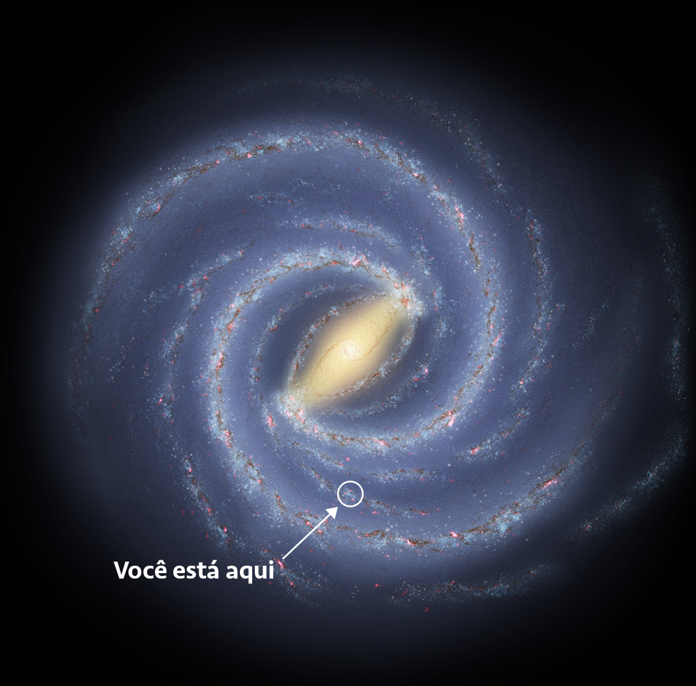

A Via Láctea é uma galáxia espiral barrada com mais de 13 bilhões de anos. Ela reúne centenas de bilhões de estrelas, gás, poeira e aglomerados. No centro fica Sagitário A*, um buraco negro supermassivo. A velocidade de rotação da galáxia fornece evidências da presença de matéria escura.
Galileu Galilei observou que a faixa brilhante do céu era formada por muitas estrelas. O Sistema Solar está no Esporão de Órion, entre os braços de Sagitário e Perseu. A Via Láctea pertence ao Grupo Local, que inclui Andrômeda e as Nuvens de Magalhães.
⬅️ Voltar à Página Inicial